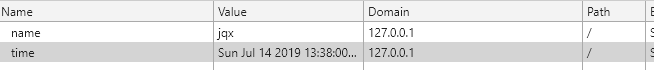
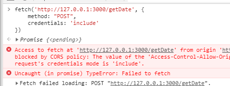
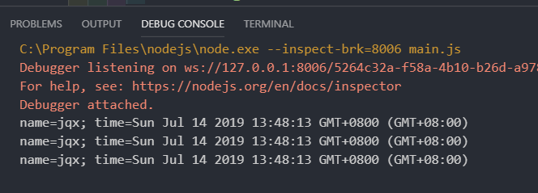
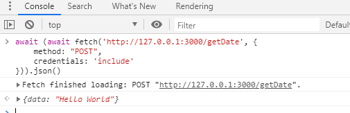

CSRF（Cross-site request forgery）跨站请求伪造，也被称为 “One Click Attack”。最近网站被检测出有被 CSRF 攻击的风险，于是上网查了一下 CSRF 的相关内容。发现一篇比较好的文章CSRF的攻击原理以及解决方法，网上的文章都大同小异，但是这篇文章不再赘述以上内容，本文主要探究非表单的 CSRF 攻击以及如何在跨域时带上 cookies。
如CSRF的攻击原理以及解决方法文章中提到的，似乎需要用户点击之后才会触发 CSRF，其实不然。只要你访问了攻击者的网站，你的 cookie 就有可能被盗用，也许不应该叫 “One Click Attack” 了。
调用 api CSRF
我在本地的页面添加了 cookie，并在百度的网站向本地服务发起一个跨域请求。


可以看到请求发出了，并且由于设置了 credentials: ‘include’ 字段，会在跨域请求中带上 cookie（一般情况跨域不携带 cookie，使用 ajax 时，需要将 xhr 对象的 withCredentials 属性设为 true）。但是由于后台没有添加跨域头的原因，浏览器将返回的数据劫持了，但这不影响服务器接收不属于当前页面的 cookie，来看后台代码。
1 | const Koa = require('koa'); |
此时来看后台的打印，可以看到用户与该网址有关的 cookie，如果这是用户的登录信息，那可就太可怕了。

可见预防 CSRF 是多么重要的事
跨域带 cookie 的请求
上文已经说了，请求想要带上 cookie 的话不仅浏览器端要配置，服务器端也要配置，我们将 POST 请求里的注释代码释放出来。然后在百度首页发起请求。
1 | .post('/getDate', (ctx, next) => { |

此时的请求已经成功拿到服务器返回的数据了。
thank for your time